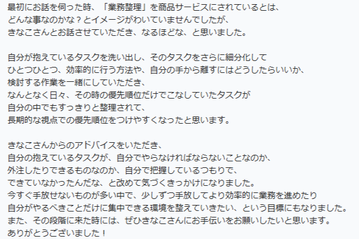
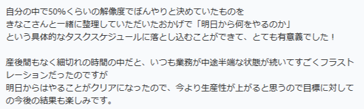

運営を「手放せる状態」へ
任せたはずなのに、
結局あなたに
戻ってきていませんか？
属人化した運営を、“手放せる状態”に整えます
業務整理・運用設計・マニュアル化・自動化まで。現場に馴染む形で、運営を整える伴走サポート。
□ 無料相談してみる オンラインでのご相談も可能です（60分程度・無料）こんなお悩み、ありませんか？
担当者しか分からない
毎回同じことで
確認や質問が来る
マニュアルがなく
引き継ぎが大変
ツールが増えすぎて
かえって不便
社長や管理者が
いつも最後の確認者に...
場当たり的で
人によって対応が違う
その原因は、
「ツール不足」ではなく
運営設計不足かもしれません。
業務の流れや役割、ルールが整理されていないと、どんなツールを入れても使われなかったり、確認漏れの負担が増えてしまいます。
大切なのは、“現場に合った運営の仕組み化”です。
よくある状態
- 属人化している
- 流れが不明確
- ルールが曖昧
- ツールがバラバラ
- マニュアルがない
あるべき状態
- 業務フローが明確
- 役割とルールを統一
- 必要な情報が整理
- ツールが最適化
- 継続的に改善される
現場に寄り添い、運営を整える6つのサポート
現状把握・ヒアリング
現場の「困りごと」を丁寧にヒアリングし、課題の漏れや重複を可視化します。
業務フロー設計
現場が使いやすい業務フローを再設計し、無駄や重複を整理します。
自動化の提案・実装
RPA・GAS・関数などを活用し、負担を減らす自動化を支援します。
マニュアル作成・教育
見開きやすいマニュアルを作り、誰でも同じ品質で進められる状態にします。
運用ルールの整備
役割・承認・管理方法を整理し、再現性のある運用ルールを整えます。
導入後の改善サポート
導入後の使い心地を確認し、現場に馴染むまで継続的に改善します。
改善事例
頭の中の業務整理をサポート
BEFORE
やることが多すぎて、優先順位が曖昧なまま毎日業務を進行
AFTER
業務を整理し、「明日何をやるか」が具体的なタスクへ
効果頭の中が整理され、業務を進めやすい状態に
請求書発行業務を自動化
BEFORE
手入力が多く、ミスや漏れが発生
AFTER
フォーマットを作成し、ボタン1つで請求書の作成が可能に
効果作業時間を約80%削減し、ミスもほぼゼロに
クライアント様からの声
実際にご支援したクライアント様から、Chatworkでいただいた
嬉しいご感想の一部をご紹介します。


※実際のやり取りの一部を、許可をいただき掲載しています。
サポートの流れ
無料相談
まずはお悩みや現状をお聞かせください。
現状分析・課題整理
業務の流れや課題を一緒に整理します。
改善提案
最適な運用設計と改善プランをご提案。
設計・実装
フロー設計やツール構築を行います。
マニュアル・教育
操作レクチャーと手順書を整えます。
運用・改善サポート
運用後の改善まで伴走します。
特徴ポイント
現場目線で設計
現場の声を大切にし、実際に使いやすい仕組みを一緒につくります。
専門用語は使いません
難しい話をわかりやすく。相手に合わせた丁寧な説明を心がけています。
再現性のある仕組み化
属人化を防ぎ、誰でも同じように運用できる仕組みを整えます。
伴走型のサポート
導入して終わりではなく、現場に馴染むまで寄り添い続けます。